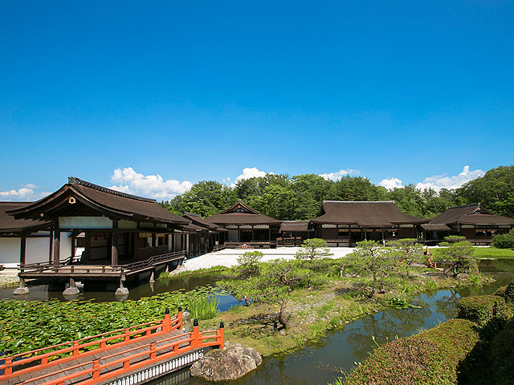

えさし藤原の郷
厳密な時代考証に基づいて造られた初代清衡公の居館「清衡館」や日本で唯一寝殿造様式の「伽羅御所」など敷地内には約120棟の建物が立ち並び、テレビドラマや映画の撮影にも使用されています。園内では「時代衣装着付体験」や「弓矢体験」などが人気です。「トリックアート平安の館」は子供から大人まで楽しめるおすすめのアトラクションです。春には桜や藤のライトアップ、秋には紅葉のライトアップも行われます。藤、ツツジ、カキツバタ、スイレン、アジサイ、ハス、萩など四季折々の植栽も見ごたえがあります。